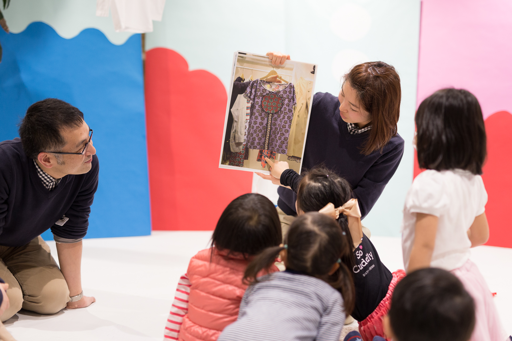
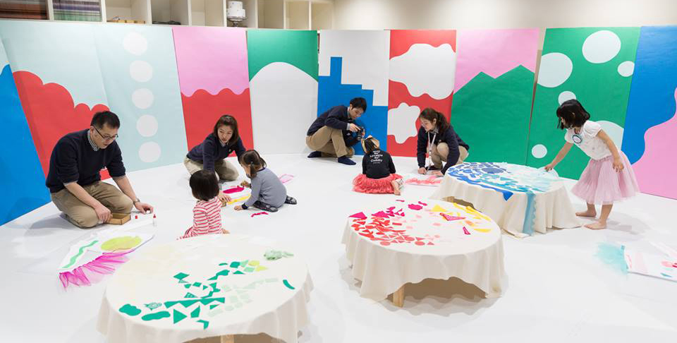
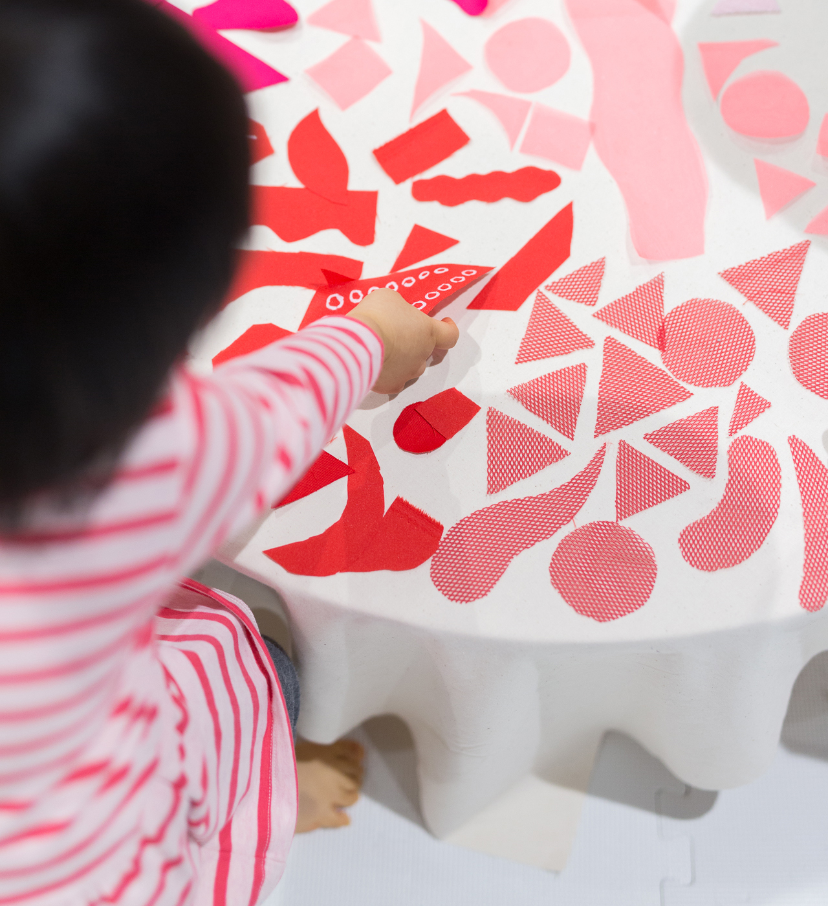
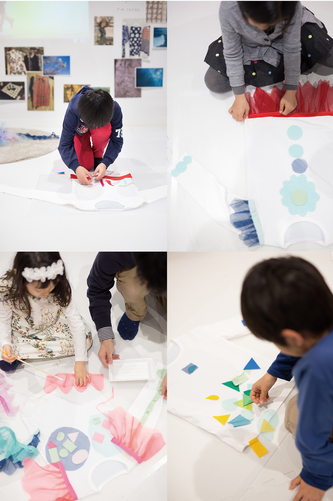
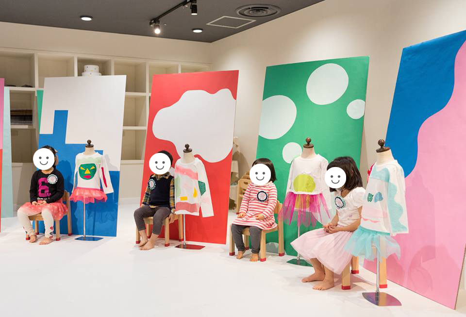

しらべてつくるわたしのおみせ
cocoiku by ISETAN
ワークショップ
2016. 03





ワークショップ
2016. 03
伊勢丹新宿店が提案するワークショップセンターcocoikuの１周年イベント。普段は、伊勢丹内の専用アトリエブースでしか開催していないが、本館の店舗にも出向くことをしたいとのことから、アパレル店舗の見学・店員さんとのコミュニケーションをもとに、自分だけのショーウィンドウをつくるワークショップを企画しました。
店舗の見学で得た、素材や模様、服のデザインの成り立ちなどのヒントから、様々な素材・形の布を組み合わせて自分だけの服を制作。それに合わせて、ショーウィンドウの背景とする壁を選び、最後は写真を撮影してアルバムにして配布しました。
＜ BACK
© Moeri Ito